Al Noor Grand Mosque
Coordinate sacred geometry without compromising reverence.
Complex domes, minarets, structural logic, services and lighting are brought into one digital environment so technical resolution supports — rather than competes with — the spiritual experience.
The model must understand geometry, structure, services and light as one sacred system.
The BIM story focuses on geometric control, structural integration, coordinated service routes, ceiling and lighting interfaces, visual review and a clear digital path from design intent to construction-ready information.
Al Noor Grand Mosque
A cinematic sequence of coordinated models, digital construction thinking and project-specific BIM intelligence.
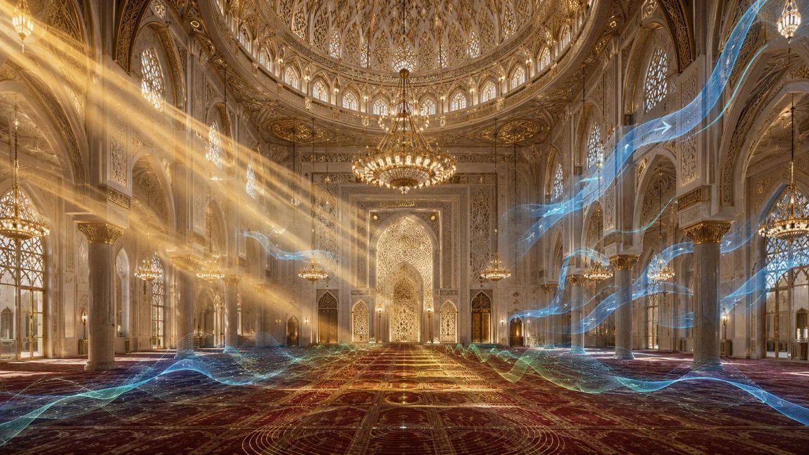
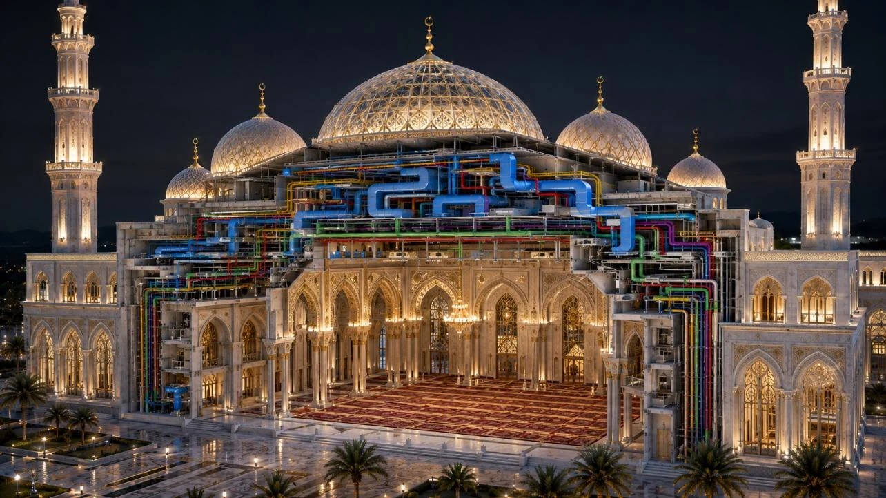
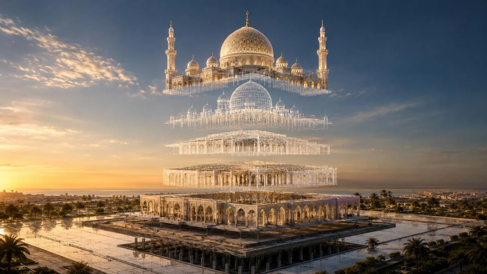
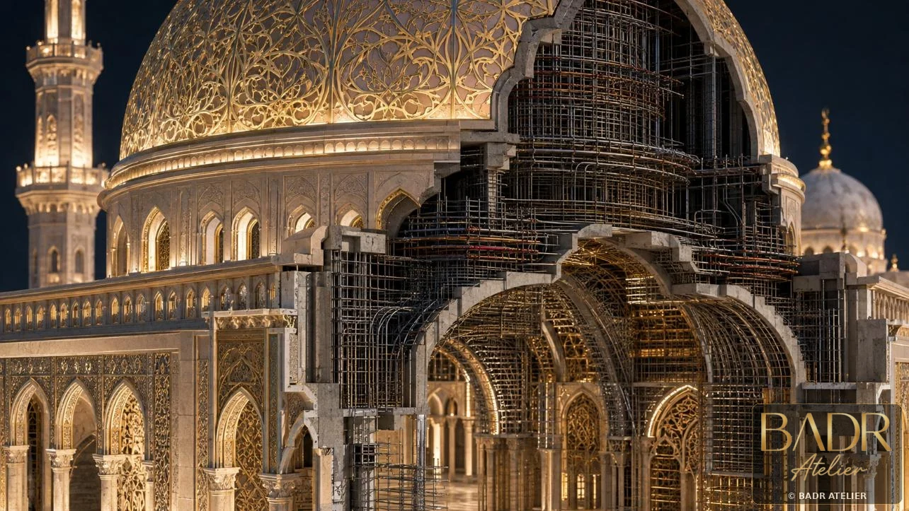
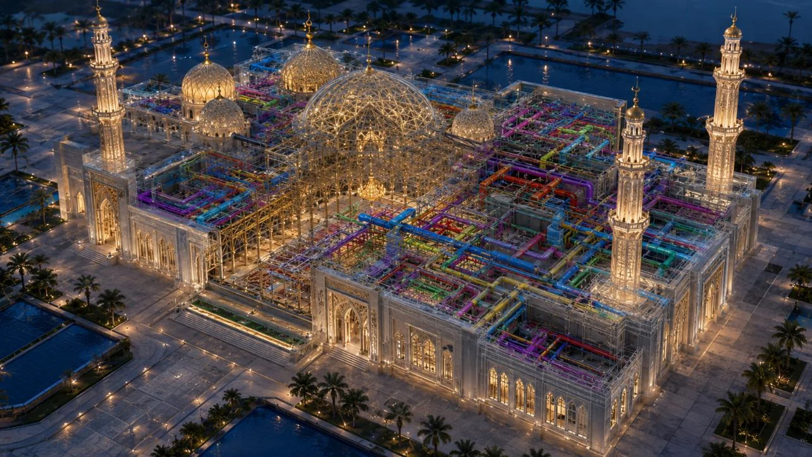
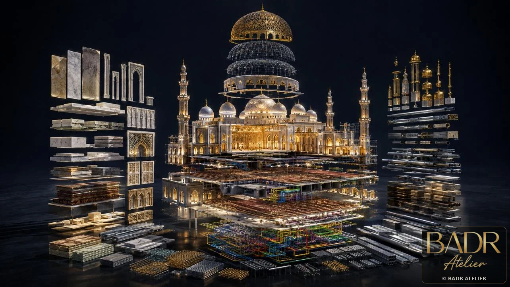
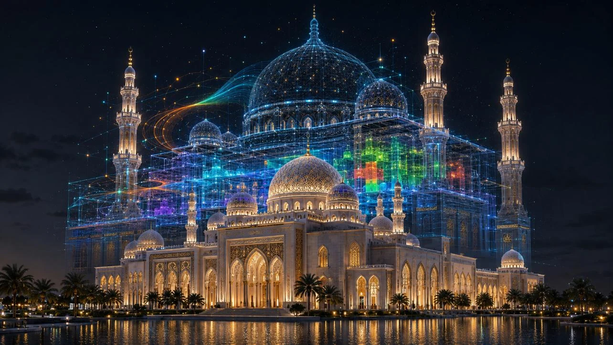
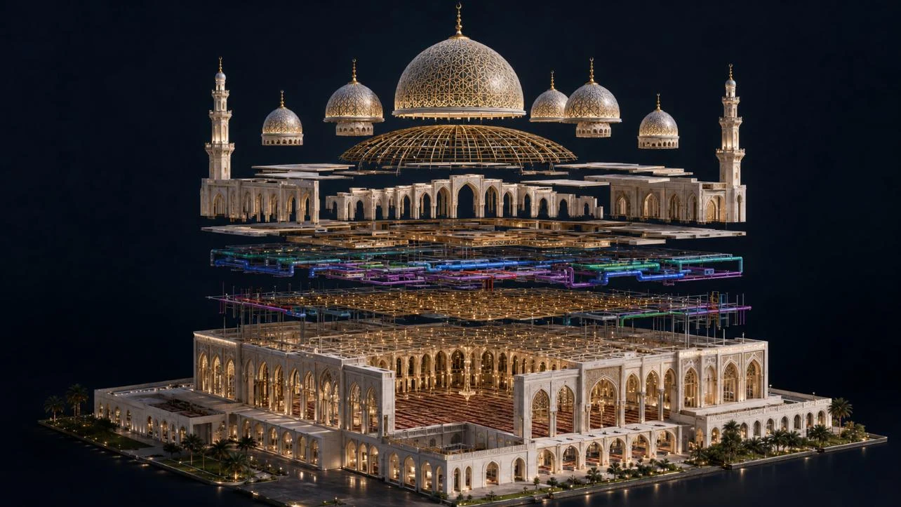
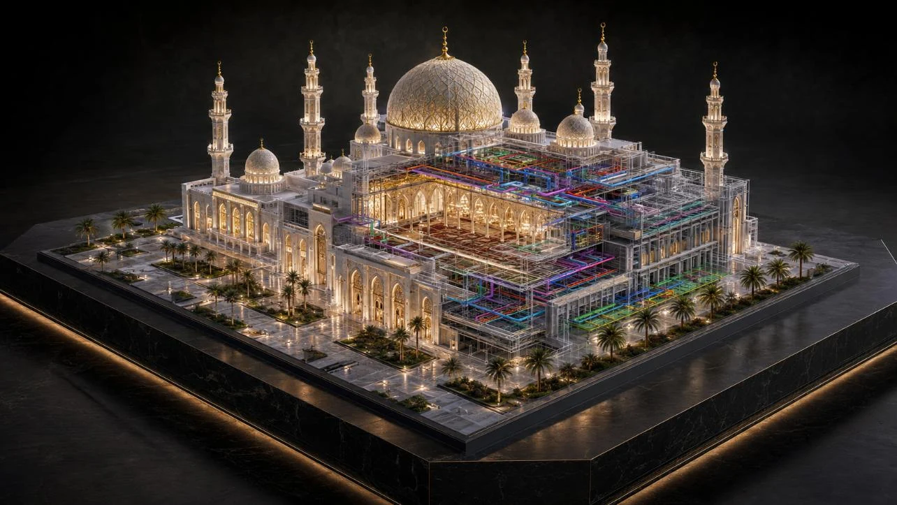
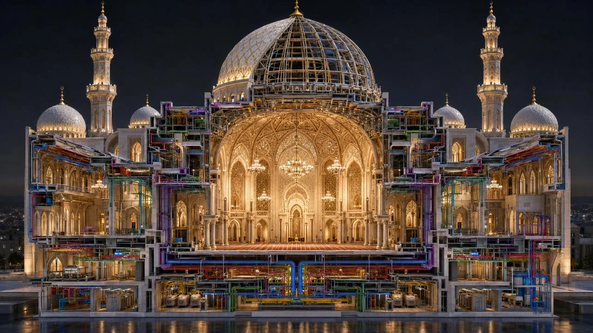
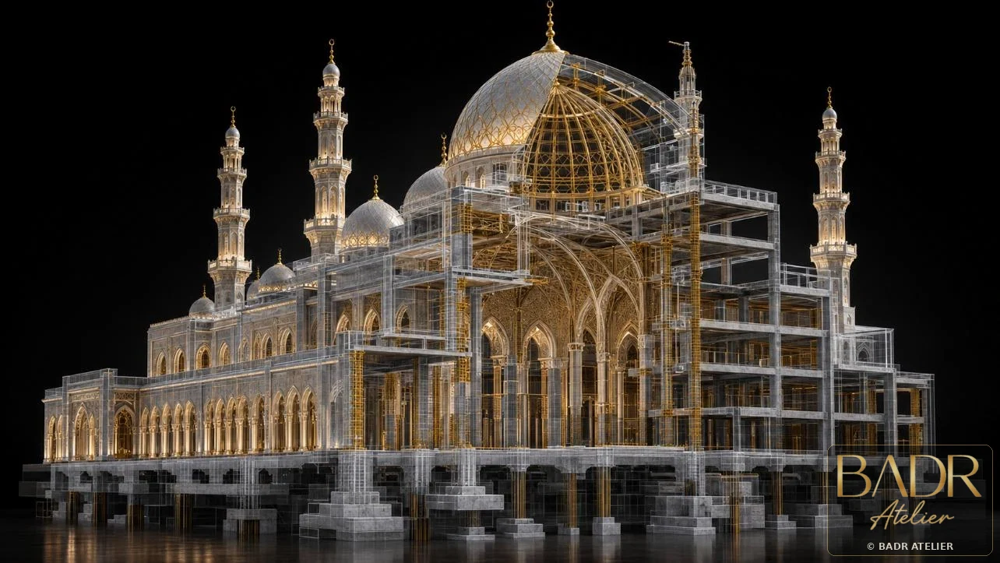
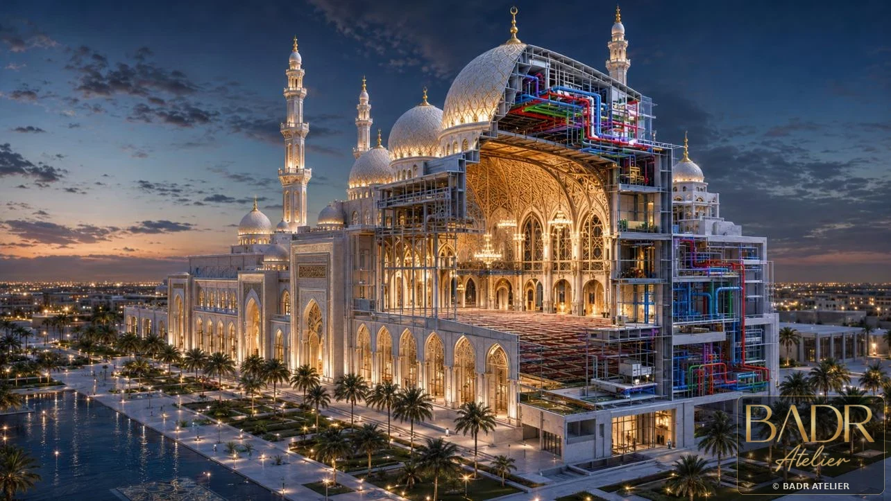
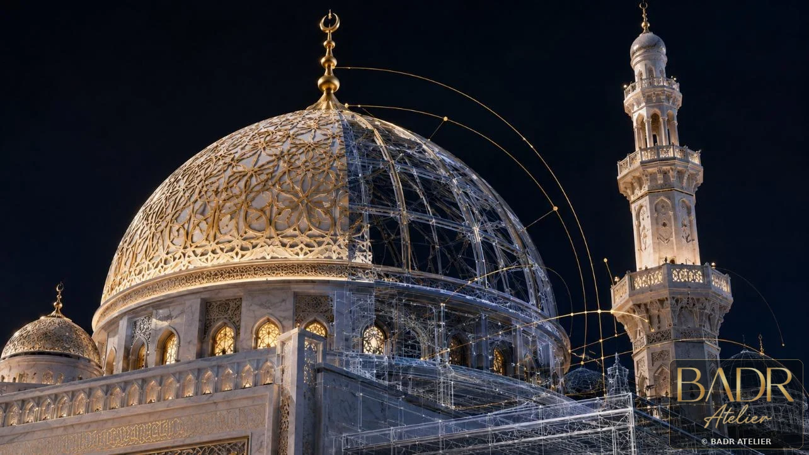
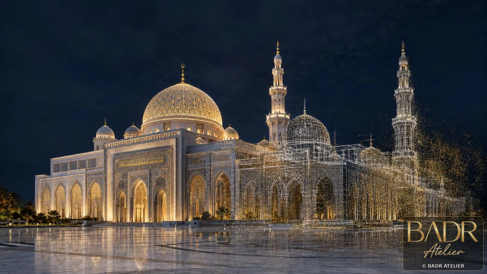
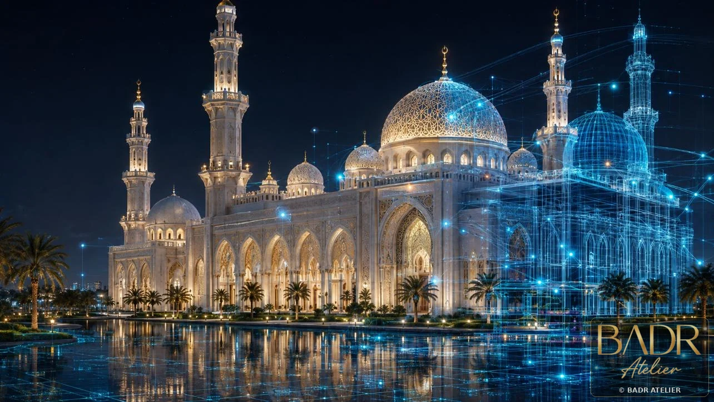
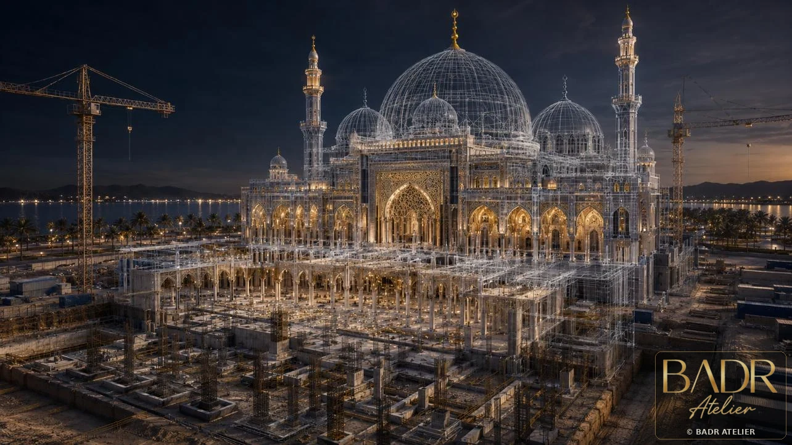